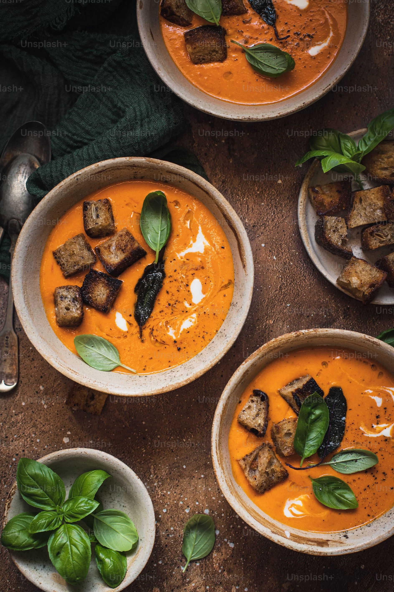

Welcome to the First Project of the Foundation Course. In this project we will see some reciepies of Indian Cuisine.
Indian cuisine , the foods and methods of their preparation traditional to India. India does not have a single cuisine. Due to its wide variety of climates, soil types, cultures, and religions, as well as influences from other countries, India has a diverse range of cuisines. As a whole, Indian cuisine can be dated to the prehistoric period and can be found across the world wherever there is a significant Indian diaspora. Indian cuisine has also played a key role in global history, Indian spices being a goal of the European Age of Discovery.
